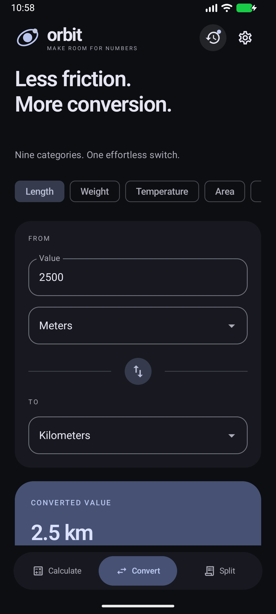
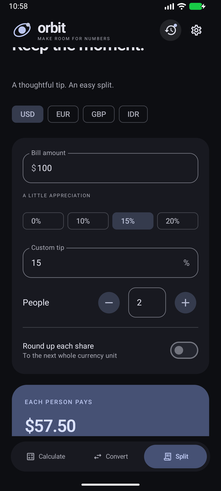

CHANGELOG
Release notes
Every version, what changed and what was verified before it shipped. The current build is 1.0.0.
2026-10-26 — first stable build.
Expression engine with live preview and a committed history. Scientific keypad with a 2nd bank, DEG/RAD with exact quadrant handling, memory register persisted across restarts. Nine unit converters, exact bill splitter with ceiling shares, four accent palettes, Material You, haptics and digit grouping. Hardware keyboard support. 137 JVM tests and 26 emulator tests passing. Debug APK 18 MB; release build 1.5 MB (unsigned).
Internal. Parser rewrite from chained operations to recursive descent; implicit multiplication and factorial added; history capped at 100 entries with search.
Internal. Calculator shell, keypad and theme system. First emulator screenshot pass.
Verification for 1.0.0
- JVM: grammar, precedence, functions, domains, formatting boundaries, all unit conversions, money rounding and split invariants.
- Emulator: arithmetic, live preview, scientific/radian mode, memory, history search and reuse, persistence across activity restarts, tab-state retention, converters, split rounding, error paths, hardware keyboard, landscape rotation, theme switching and Material You.
- Visual capture: light, dark scientific, Material You, converter and split screens.


Download 1.0.0 · What comes next
← Back to the site